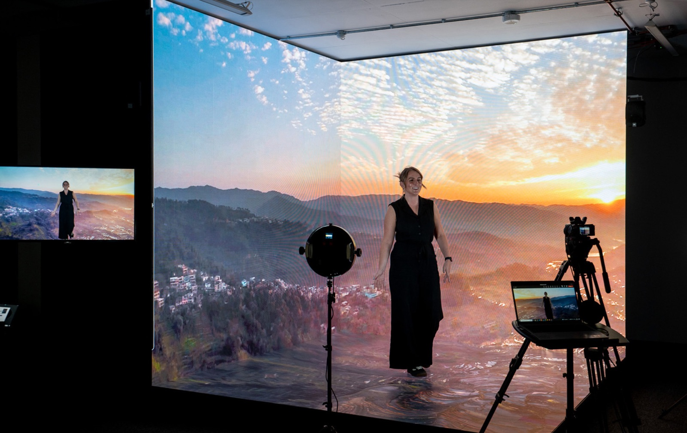

By Cassie
What does a Nepal LED display importer need to know? Importing LED displays into Nepal means moving cargo in transit through the Indian port of Kolkata, clearing at Birgunj or the Kathmandu air cargo terminal, meeting NBSM standards where they apply, and specifying equipment for mountain temperature swings and unreliable power. This 2026 guide explains the sequence.
Nepal is a landlocked market of about thirty million people with demand for LED displays from retail, banking, telecoms, hospitality, tourism, education, and a growing events sector. Domestic production is negligible, so essentially every professional screen is imported, overwhelmingly from China.
A Nepal LED display importer who arranges the Indian transit before dispatch and clears at Birgunj without a document gap avoids most of the delay. The obligations that catch buyers out are the transit arrangement through India and the mountain power and climate specification.
Nepal has no seaport. Under its transit treaty with India, seaborne cargo is discharged at the Indian port of Kolkata, moved by rail or road to the Nepalese border, and cleared through the inland clearance depot at Birgunj, also known as Sirsiya, which is the principal dry port. Bhairahawa, Biratnagar, and Kakarbhitta handle other border corridors. Air cargo enters through Tribhuvan International Airport in Kathmandu.
The importer must be a registered business with a permanent account number and hold an importer registration certificate. Declarations are filed through the customs system of the Department of Customs, and a licensed customs agent normally files on the importer's behalf.
| Step | What Is Required | Who Handles It |
|---|---|---|
| Business and tax registration | Permanent account number | Importer |
| Importer registration | Importer registration certificate | Importer |
| Indian transit | Transit documentation from Kolkata | Freight forwarder |
| Customs declaration | Entry filed with the Department of Customs | Agent or importer |
| Duty and VAT | Assessed on the customs value | Importer |
| Inland transport | Delivery from Birgunj to site | Importer or agent |
Confirm the consignee details on the bill of lading and the Indian transit documents against the importer of record. On a route where the goods move through a third country before they reach Nepal, a mismatch between the transport documents and the declaration is a common cause of delay at Birgunj.
Nepal develops its national standards through the Nepal Bureau of Standards and Metrology, known as NBSM, which operates under the Ministry of Industry, Commerce and Supplies. Standards are issued under the Nepal Standard designation, abbreviated NS, and the bureau operates a certification marks scheme under which qualifying products carry the NS mark.
The scheme is voluntary for many products and mandatory for goods on the regulated list, so confirm the position for the specific article rather than assuming a rule applies. For an imported LED display the practical requirements are usually the importer registration, the customs documentation, and the supplier's test evidence for the offered model.
| Requirement | What It Covers | Evidence to Hold |
|---|---|---|
| Nepal Standard position | Whether an NS requirement applies to the article | Confirmation from NBSM or the agent |
| Safety test report | Electrical safety | Report naming the offered model |
| EMC test report | Electromagnetic compatibility | EMC test report |
| Technical file | Drawings and specifications | Complete file held by the importer |
| Import documentation | Registration and customs papers | Complete file for the shipment |
| Model identification | Exact model supplied | Photographs and model data |
Keep the technical file after the goods are sold, because it supports a warranty claim and any conformity question raised later. A file assembled at the order stage costs far less than one reconstructed afterwards.
Nepal applies the customs tariff set out in its customs tariff schedule, and the rate depends on the classification of each line. Duty is calculated on the customs value, and value added tax is charged on the duty-paid value at the standard rate. A range of small levies adds to the total.
| Cost Element | Basis | Notes |
|---|---|---|
| Customs duty | Commodity code and customs value | Confirm the rate for the code |
| Value added tax | Value plus duty | Standard rate applies on import |
| Indian transit charges | Per shipment from Kolkata | Rail and handling to the border |
| Customs agent fee | Per declaration | Varies by agent and volume |
| Border and storage | Per day after the free period | Mounts quickly at Birgunj |
| Inland transport | By distance and road condition | Confirm delivery to site |
Value added tax is recoverable for a registered business, so the effect is on cash flow rather than on final cost. Duty, the transit charges, and the agent fees are not recoverable and belong in the cost calculation from the beginning.
Model the landed cost before comparing suppliers, because the Indian transit leg and the border handling at Birgunj are charged in addition to the ocean freight and can add materially to the cost of a container.
Most importers work through a licensed agent who files the declaration and manages both the Indian transit leg and the Nepalese clearance. Choose an agent who regularly clears electronic goods, because the classification of a display, its power supplies, its control hardware, and its mounting steel differs and each line carries its own treatment.
Give the agent the complete document pack before the goods leave Shenzhen. A shipment that reaches Kolkata with incomplete paperwork cannot even begin the transit movement, and the container accrues storage charges while the file is completed.
Confirm in writing who pays the Indian transit charges, the border handling, and the delivery leg to Kathmandu or the site. A written allocation of costs in the purchase contract prevents a dispute while the goods sit at the dry port.
Nepal has a temperate climate in the Kathmandu valley and a mountain climate in the higher districts. Winters in the valley are cold with occasional frost, summer days are warm and humid during the monsoon, and hill and mountain sites see heavy rain, steep temperature swings, and snow at altitude.
For Nepalese sites, low winter temperatures make cabinet construction and sealing the deciding factors — the X Series uses standard 500×500mm cabinets with front/rear service, and the COB EF outdoor series is sealed against snow-melt and moisture ingress.
| Condition | Risk | Specification Response |
|---|---|---|
| Winter frost in the valley | Cold-start failure | Low-temperature rating and a heater option |
| Large day to night swing | Condensation and thermal stress | Enclosure design and conformal coating |
| Monsoon humidity and rain | Water ingress and moisture in cabinets | High ingress rating and sealed cable entries |
| High-altitude solar load | Fading and thermal stress | UV-stable materials and a derating plan |
| Frequent power cuts | Outages and voltage variation | Wide-input supplies, surge protection, and UPS planning |
| Dust and vehicle emissions | Blocked cooling paths | Filtration and a cleaning schedule |
Where the site relies on a generator or suffers daily load shedding, specify power supplies with a wide input range and plan the restart behaviour so the screen recovers cleanly when the supply returns. On a hill site, confirm the transport route to the mounting position before the cabinets are ordered.
Most LED display cargo reaches Nepal by sea from Shenzhen or Shanghai to Kolkata, then by rail or road to Birgunj for clearance. Air freight arrives at Tribhuvan International Airport in Kathmandu and is reserved for urgent spare parts and sample units, though the air cargo terminal there also handles smaller consignments.
| Stage | Typical Duration | What Can Delay It |
|---|---|---|
| Production | 15 to 25 working days | Component availability and queue |
| Inland to port and export | 3 to 5 days | Booking availability |
| Sea freight to Kolkata | Varies by routing | Transshipment and carrier schedule |
| Transit to the border | 5 to 10 days | Rail capacity and border congestion |
| Import clearance at Birgunj | 3 to 8 days | Documentation queries and inspection |
| Total | Approximately 7 to 10 weeks | Add a substantial buffer |
Build a buffer of at least three weeks beyond the quoted transit time. The route involves a change of country, a change of mode, and a border clearance, and a delay at any stage pushes the delivery back by a full transit cycle rather than by a day.
Ask every candidate the same questions and record the answers. For Nepalese projects the power design, the cold and altitude specification, and the packing for a multi-leg journey matter as much as the price.
| Question | What a Strong Answer Looks Like | Warning Sign |
|---|---|---|
| Power design | Wide-input supplies and surge protection offered | One specification for all markets |
| Cold and altitude rating | Stated operating and cold-start range | Not specified |
| Restart behaviour | Clean recovery after a power cut | Question avoided |
| Packaging for multi-leg transit | Crating method described for road and sea legs | Not addressed |
| Documentation | Full technical file supplied | Reluctant to provide |
| Spare parts availability | Stated period in writing | No commitment given |
Confirm the components in writing and require written approval for any substitution. A supplier facing a component shortage may change a part quietly, and the change only appears when the screens arrive in Kathmandu.
Each mistake is inexpensive to avoid during planning and costly after the goods land. A Nepal LED display importer who arranges the transit, confirms the standards position, and specifies for the power and climate avoids most of them.
Asia Vision Technology manufactures LED displays in Shenzhen and supplies importers, distributors, and contractors across South Asia. The factory prepares the technical documentation needed for the import and conformity file, builds power supplies to the voltage and temperature range of the destination, and holds spare parts for the stated warranty period.
For Nepalese projects the company supplies rental cabinets for events, fine pitch screens for retail and corporate work, and outdoor displays rated for monsoon humidity, altitude, and wide temperature swings. OEM and ODM production is available for distributors building their own range.
